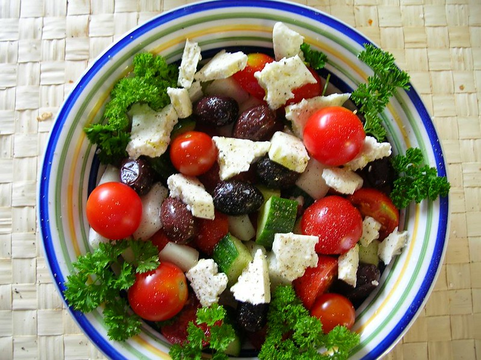

Home
Greek Salad

Description
This Greek salad is a delicious combination of romaine lettuce, sliced cucumbers, chopped tomatoes, pitted black olives (or Kalamata olives), red and green bell peppers,
a red onion, and feta cheese.
The dressing is a simple mixture of olive oil, a juiced lemon, dried oregano, and ground black pepper.
Ingredients
- 1 Romaine Lettuce
- 1 cucumber
- 2 tomatoes
- 1 can of black olives
- 1 green bell pepper
- 1 red bell pepper
- 1 red onion
- 1 cup of crumbled feta cheese
- Olive oil
- 1 teaspoon of oregano
Steps
- Combine romaine, cucumber, tomatoes, olives, bell peppers, and red onion in a large bowl; sprinkle with feta cheese.
- Whisk olive oil, lemon juice, oregano, and black pepper together in a small bowl. Pour dressing over salad, toss well to combine, and serve.
- Pour dressing over salad, toss well to combine, and serve.